next4
A college-matching app for high school students, built on a knowledge base of 6,271 institutions and 145,000+ facts sourced entirely from federal data. A student sorts 86 preference cards; the app returns a ranked list of real schools and shows, per school, exactly which of their own answers put it there. The ranking is computed, not generated, so a language model can never invent a school statistic.
The problem
The college search runs backwards. A student takes a standardized test, checks a box, and their information goes onto a list that colleges buy access to. Then several hundred brochures arrive. Those are schools that bought their demographic, not schools that fit them.
The tools meant to fix this mostly have the same problem underneath. Many of the free ones are paid by colleges rather than by families, which makes "who fits you" and "who is paying us" the same question. And the tool most students actually use is ChatGPT, which will confidently assemble a college list out of whatever it finds on school marketing pages, with no way for a 17-year-old to catch a number that's wrong.
I ran a demand study before we committed to building anything: 1,226 Reddit comments across 39 threads, coded and adversarially verified. It found that the funded competitors had close to zero organic mindshare. The things students actually named as their alternatives were ChatGPT, free guides, and expensive consultants they didn't trust. That reframed the whole opportunity: the competition wasn't a startup, it was a general-purpose chatbot that can't compare anything.
The insight & the wedge
Two mechanisms, in this order.
The card sort is the instrument. Sorting 86 cards into five buckets pulls out preferences a student cannot articulate into a search form. Nobody types "I want a mid-size school in a college town with strong research access and low cost of living" into a filter. But they will tell you, one card at a time, and that's what they remember doing.
The ranking is deterministic and fact-backed. Matching runs against federal data with no language model anywhere in the critical path. Must-haves and dealbreakers become database filters; everything else scores. That's what makes the sort's output trustworthy instead of merely fun.
Neither half stands alone. Aggregators rank on opaque proprietary scores and have no comparable instrument. A quiz without the engine behind it couldn't defend its own output.
What I built
I co-founded next4 and work across product definition, the data layer, the build, and all of marketing. We started with the database rather than the interface, which is the decision everything else follows from.
The knowledge base
I sourced and modeled the institution data: IPEDS, College Scorecard, the Common Data Set, Carnegie classifications, and BEA regional price parities. Each field carries provenance, so any number in the app can be traced back to the dataset and release it came from. A provenance ratchet detects changes on re-ingest rather than silently overwriting.
Getting the derived measures right was the slow part, and the failures were instructive. An early "academic vs. social" axis was built as a single scale running from academically focused to party school — which quietly encoded the assumption that a school can't be both. Splitting it into two independent indexes showed the two correlate at +0.42, not −1, with 122 schools in the top quintile of both. The original model wasn't just imprecise; it was describing a world that doesn't exist.
A later audit caught something sharper: one candidate academic measure correlated −0.55 with Pell share, meaning it was substantially tracking student wealth. We drove the card off a different sub-score rather than ship a proxy for family income as a measure of academic quality.
The most recent addition is program-level earnings — 69,948 bachelor-level rows from College Scorecard Field of Study — so "what do this school's graduates in this major actually earn" became answerable. Privacy-suppressed rows are loaded as suppressed rather than missing, so "we can't report this" can never be read by the app as "this program doesn't exist."
The match engine and the app
Matching is a deterministic computation over the knowledge base. Must-haves become hard filters; when filters over-constrain the pool, an auto-relax loop demotes the lowest-priority ones instead of returning an empty list. Results are instant because there is nothing to generate.
Explainability is a product guarantee, not a feature. Every result carries the student's own matched cards, grouped the way they sorted them, computed from the same evaluation that produced the score — so the explanation and the ranking can never disagree. A language model runs exactly once, after a student saves a school, to write the "why and next steps" prose. It never touches a number.
The product
Shipped to the App Store on September 2, 2026:
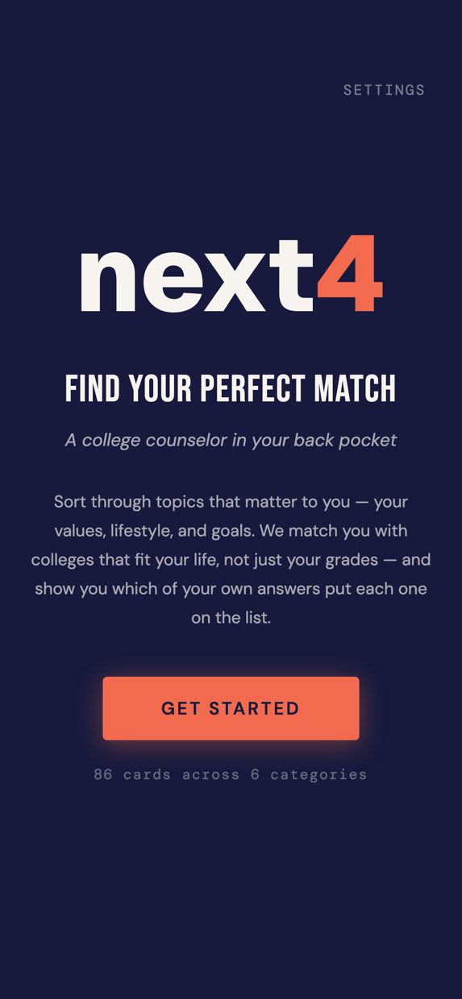
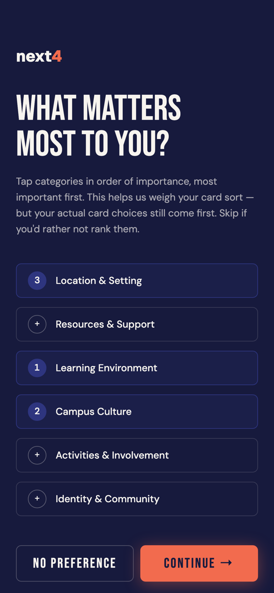
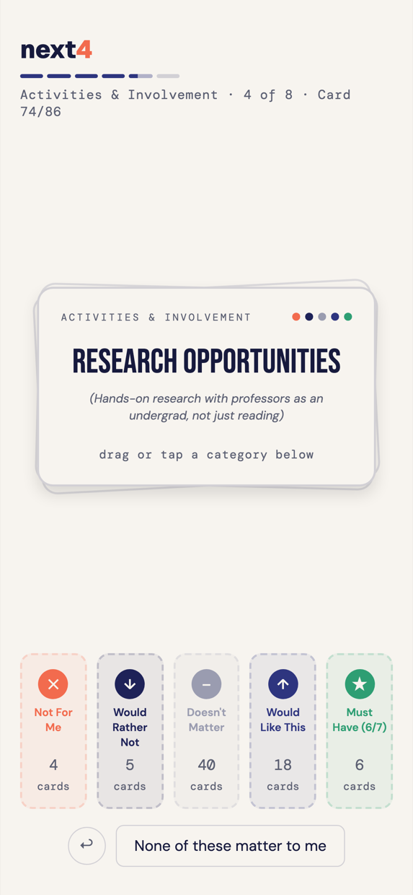
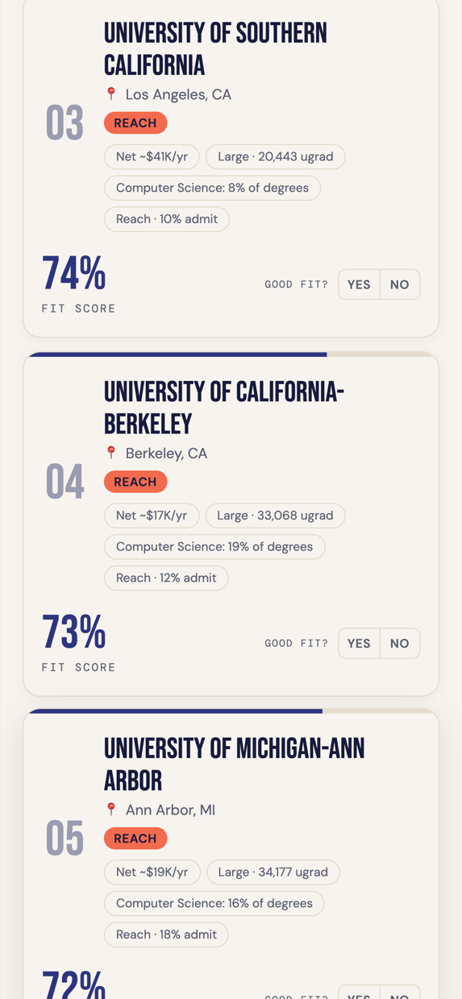
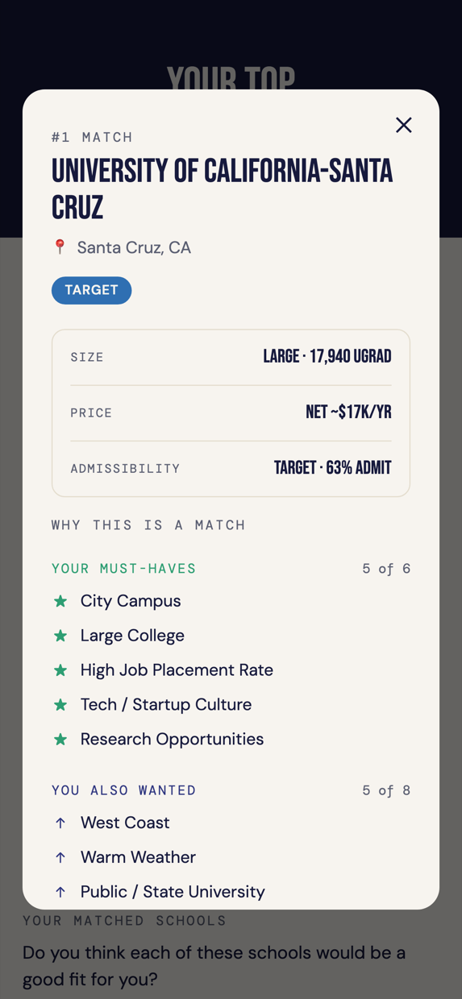
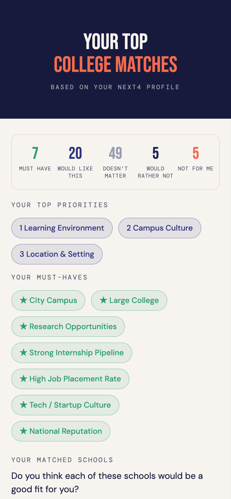
Two things we decided not to build
Both were features users asked for. Both were cut on purpose, and the reasoning matters more than the features did.
No admission-chance percentage. Chancing was simultaneously the most-wanted and the least-trusted feature in the category — our own research found students asking for it and disbelieving it in the same thread. We built the screen, looked at it, and took the number out. "12%" makes a student drop a school and "80%" makes them stop trying, and neither one is information. The app shows a range and the specific next step instead.
No AI essay writing. Feedback and coaching only, student authorship preserved and visibly disclosed. This is the objection every parent and counselor raises first, and it's a commitment rather than a positioning choice — which is why the marketing rules below forbid softening it even to "helps you write."
The AI marketing organization
next4 has no marketing team. It has a system I designed that does what a marketing team does, run by Claude agents against a structured datastore, and it produces 14 posts a week across six channels without me writing them.
The design problem wasn't "generate content." Generating content is easy and mostly worthless. The problem was that this product markets to minors about a six-figure decision, on claims that must be factually defensible, in a category where one invented statistic destroys the entire argument. So the system is built as an organization: a strategy layer, an execution loop, and a compliance layer that can stop a post.
How the week runs
Monday, 7:00am — the research run
An agent scrapes the TikTok and Instagram accounts and hashtags listed in the workbook's seed list, summarizes what's moving in the category, appends the findings to a trends log that is never overwritten, and emails me the whole week at a glance. The seed list is a spreadsheet tab, not hardcoded, so changing what gets watched is an edit rather than a code change.
Tuesday–Friday, 7:00am — the daily dispatch
One email per day containing only that day's posts: channel, account, format, the full script or copy, the asset needed, and the CTA. I post it. There's no dashboard to check and no backlog to triage.
The heads-up section
Each email flags what tomorrow needs filmed or designed today. This is the part that makes the system survive a busy week — the failure mode of any content calendar is arriving at a post with no asset for it.
The workbook is the datastore, not the interface
Weekly schedules, the engagement queue, curated campus photos, the seed list, the trends log, pillars, channels, rules, backlog, and a tracker that rolls up posted counts. I open it to change strategy, not to work. The operating instruction at the top of it is literally "you work from email, not from this file."
The strategy layer
Seven content pillars, each with a defined argument, its channels, example hooks, and its own guardrails. A few of them:
Matched, not recruited
The free competitors are paid by colleges; next4 is paid by families. The wedge. Guardrail: stay categorical in short-form video — name a competitor only where the receipt can be linked in the same post.
The receipts
Real sourced numbers on real schools: net price by income band, graduation rate, earnings by major. Proves the knowledge base exists. Guardrail: every figure from the KB or a named federal source, screenshotted before filming.
Chancing, refused
We built the percentage, looked at it, and deleted it. Refusing to fake precision is a trust play competitors structurally can't copy. Guardrail: never attach a percentage to a next4 output — including in mockups.
Versus ChatGPT
Nearly every student in the target already uses it for this. Guardrail: be genuinely fair about what ChatGPT is good at — the generous comparison is what makes the critical part land.
Six channels, each with its own job, cadence, voice, and rules — TikTok and Instagram to reach students, LinkedIn to reach the people who actually pay, X/Threads for founder voice, Facebook groups to meet parents where they already ask questions. The channel rules encode things that are only learnable by getting them wrong: LinkedIn suppresses posts with outbound links, so the link goes in the first comment. Instagram Reels must be exported natively rather than saved from TikTok, or the watermark gets the post suppressed. Facebook parent groups ban business pages, so those posts come from a personal profile — with a disclosure line, because a personal profile without one is astroturfing.
The compliance layer
Twelve non-negotiables, each written as a rule, a reason, and a question to check the post against before it goes out. This is the part that makes the system safe to run at speed:
What replaced it was a better story that was also true: ChatGPT had returned five financial-aid figures pulled from five different school marketing pages, using five different definitions, stacked in one column as if comparable — and footnoted, unprompted, that they don't compare. At Duquesne it reported $38,766 in average aid, while federal data says the average student there still pays $37,730 a year. Both numbers are real. It handed the student the one that sounds good. The actual argument isn't that ChatGPT is dumb; it's that it can't compare anything.
The rewritten brief ships with its receipts attached: the exact prompt used, the audit table, a compliance checklist, every source URL with its retrieval date, and a note to re-verify the figure before posting because the federal dataset refreshes annually. That document is the actual deliverable of the system — not the video.
What it produces
Finished, postable assets — vertical video, carousels, long-form launch posts — generated from the week's briefs and rendered from HTML so they're reproducible and correctable rather than one-off exports.
The video is the essay-coaching pillar. The carousel below is the seasonal pillar: a seven-slide "8 weeks to Nov 1" deck, built to be useful whether or not anyone downloads the app, because that's what makes a stranger follow the account before the product means anything to them.
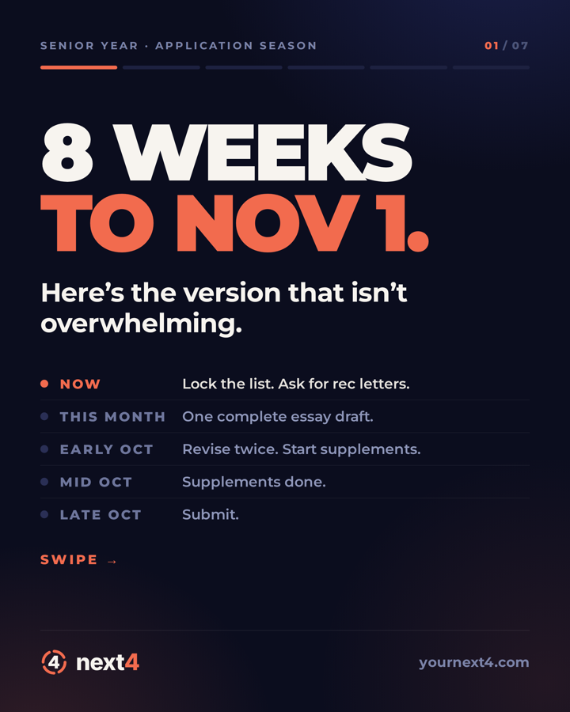
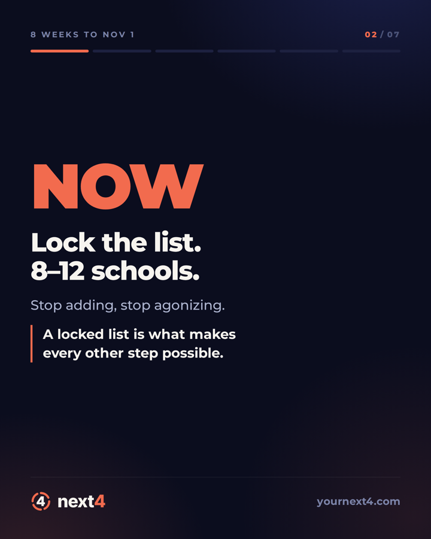
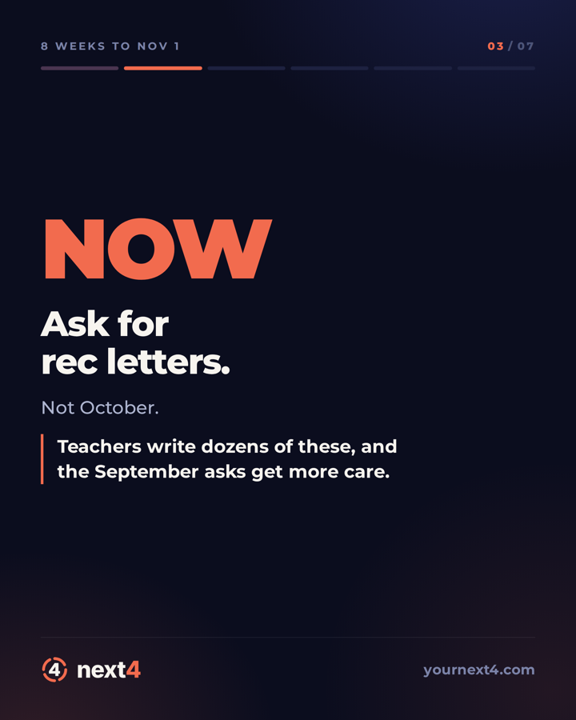
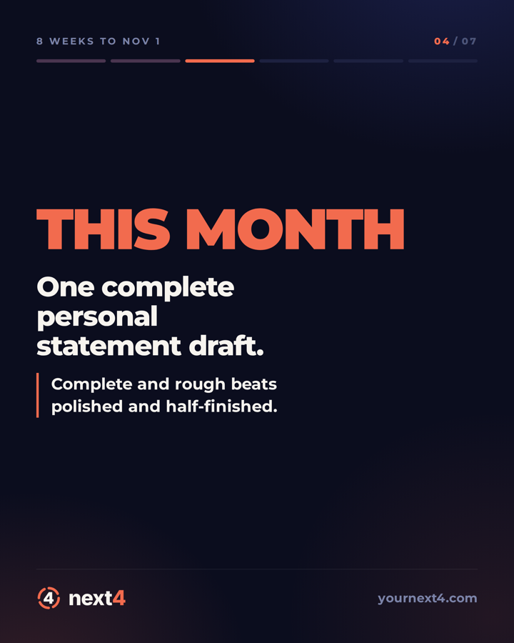
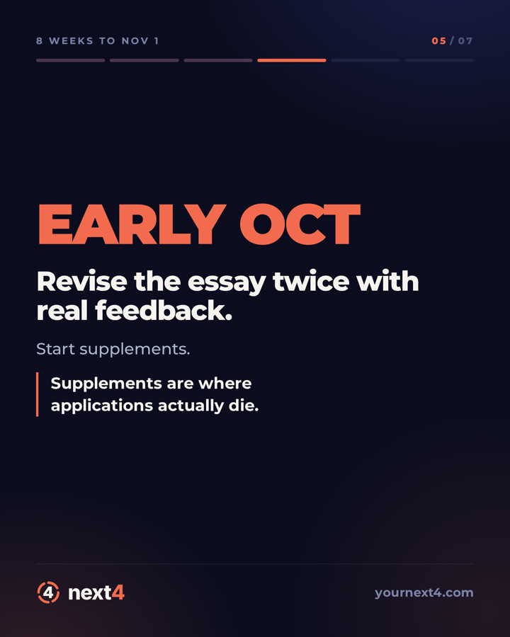
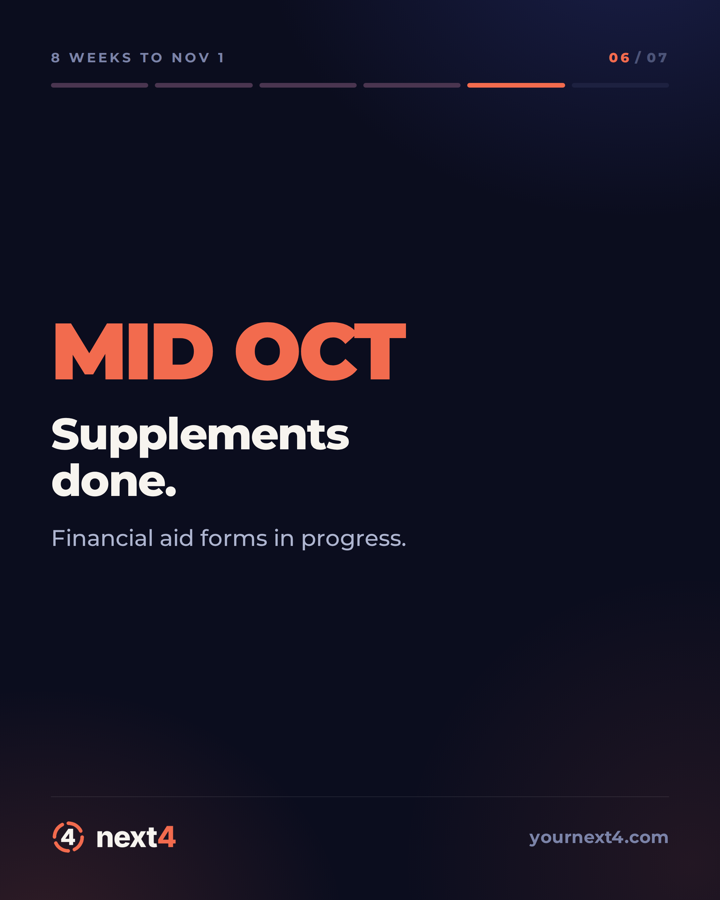
Seven-slide carousel, scroll to see the set →
How I actually build with agents
The same discipline runs on the engineering side. I build through Claude Code, but the leverage isn't in asking for code — it's in the structure around the asking.
- Spec before plan, plan before code. Each phase got a written spec and a task plan before anything was implemented. The specs are artifacts in the repo, not chat history.
- Subagent-driven execution with test-driven development. Tasks are dispatched to focused agents that write the test first. The engine and knowledge-base packages carry several hundred tests between them, and they're the reason a data migration can be shipped with confidence.
- Adversarial review as a separate pass. A reviewing agent looks for what the building agent missed. It has caught real defects — an eviction bug in list-shaping, a scoring measure that was tracking wealth, a whitespace bug that passed unit tests because the test runner's transform preserved a space the production build dropped.
- A decision log and session history. Every decision is written down with its reasoning and date. When a fact stops being true — and several have — the record gets corrected in place rather than quietly diverging from reality.
The honest version: agents make mistakes constantly, and most of them are confident. Two of the most important facts in this case study — the academic/social correlation and the wealth proxy — are things an earlier pass got wrong and a later one caught. The value isn't the generation. It's building the verification step that assumes the generation is wrong.
Where it stands
next4 shipped to the App Store on September 2, 2026, with a web version at app.yournext4.com. Launch week ran through the marketing system: founder-signed LinkedIn posts, the App Store link in the first comment, sequenced hours apart rather than fired simultaneously.
The open problem I'd name first: of the 86 cards, 14 are currently read by nothing in the ranking, and 16 more score only where enrichment exists. Students can currently sort cards that don't move their results. That's a live product problem, it's written down as one, and closing it is the next piece of work — along with a licensing audit across the remaining publisher-derived measures.
What I'd want to talk about: the tradeoff between shipping fast and shipping something a 17-year-old can't catch being wrong. We chose the slower build. I think it was right, and I'd argue it either way.